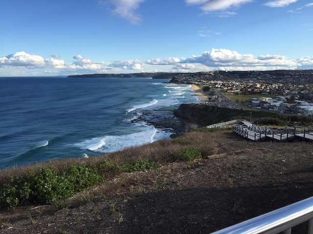
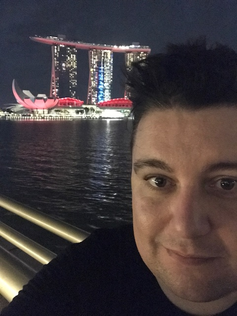
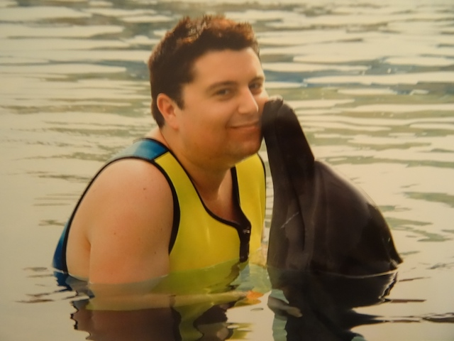

Name: Christopher Box
Student Number: s3992802
Student Email Address: s3992802@student.rmit.edu.au
I’m 42 years of age and live in Newcastle, NSW. My mother’s side of the family is Hungarian and dad’s side of the family is Australian. They met in Australia after Mum and her parents immigrated via Austria, after Russia / Communism took control of Eastern Europe once they drove the Nazis out. We’re an English speaking family but I know a little Japanese, French and German.
I completed Year 12 way back in 1998, when Computer Studies was using an Apple Macintosh with no internet connection. Since then I've completed a Certificate IV in Financial Services, while working in Banking for 4 years. After a violent bank robbery I sought a change in career and ended up working at Telstra in 2006, where I work now. At Telstra I’ve completed a Certificate IV in Frontline Management, amongst other internal training.
I really enjoy gaming, technology, and travel. I love getting the latest gadgets and gaming consoles (VR headsets also). I have a Sony Aibo (robot dog) which I’d love to be able to upgrade one day to have a HD camera. I keenly follow robotics and A.I. - I’m a bit of a science nerd and do like watching a good documentary. I’d also like to develop my hobby of astrophotography.